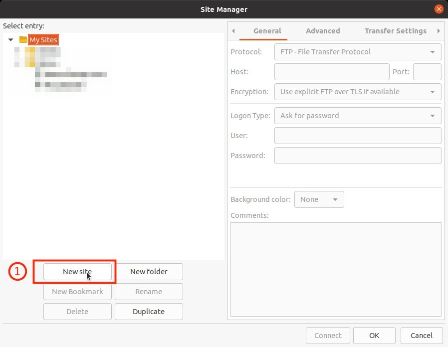
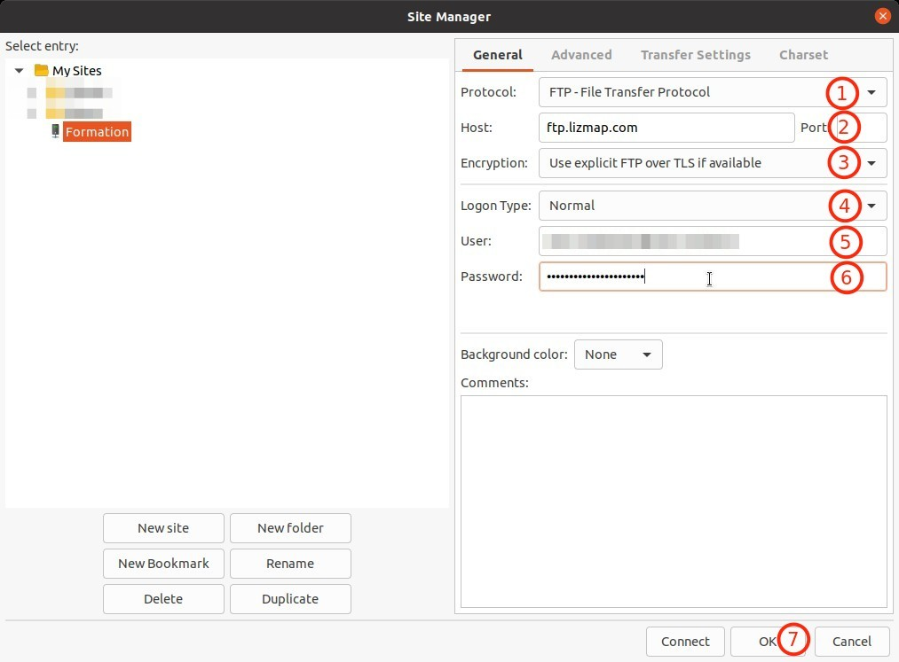
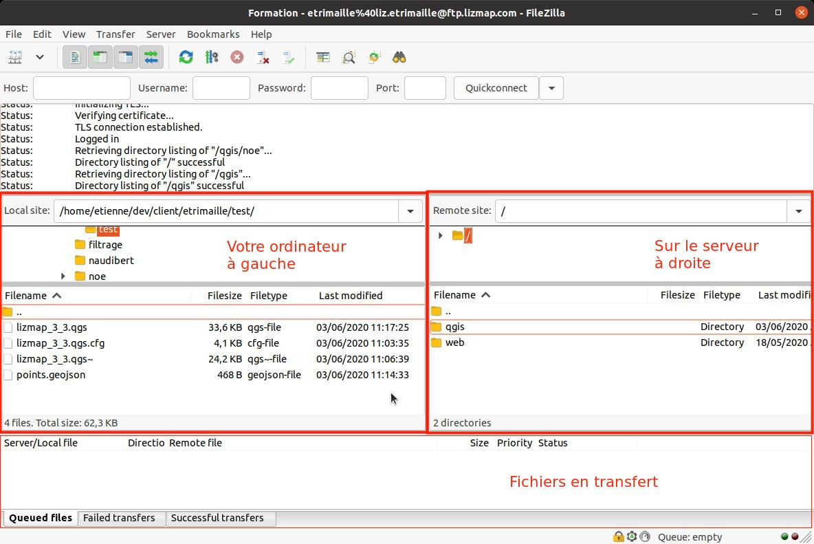

Table of content
Utilisation de filezilla
Installation
-
Vous devez télécharger et installer le logiciel FileZilla Client depuis ce lien : https://filezilla-project.org/download.php?type=client
-
Une fois l'installation effectuée, vous pouvez enregistrer la connexion vers le serveur FTP.
Enregistrement de votre serveur Lizmap
- 1 Par email, vous avez du recevoir les identifiants de connexions vers le serveur FTP.
- 2 Ouvrez FileZilla Client
- 3 Cliquez sur le premier icône dans la barre d'outils

- 4 Nouveau site

- 5 Complétez les informations :
- 1 : Protocol :
FTP - 2 : Host :
ftp.lizmap.com - 3 : Encryption :
Use explicit FTP over TLS if available - 4 : Logon type :
Normal - 5 : User : Le nom d'utilisateur reçu par email
- 6 : Password : Le mot de passe reçu par email
- 1 : Protocol :

Note, il est possible de synchroniser la navigation dans l'onglet Avancé.
-
6 Validez l'ajout de cette connexion.
-
7 En utilisant le deuxième bouton dans la barre d'outils, vous pouvez vous connecter au serveur FTP

- 8 Vous devriez avoir un écran semblable à celui-ci :

- Description de l'interface :
- En haut, des commandes FTP, pas besoin de s'inquiéter des messages
- À gauche, votre ordinateur
- À droite, le serveur
-
En bas, un récapitulatif des données qui sont en transfert.
-
Par glisser/déposer, nous allons déplacer des fichiers de votre ordinateur vers le serveur.
Arborescence par défaut
Sur le serveur, toujours dans le dossier qgis, nous allons créer des répertoires qui seront vos thématiques.